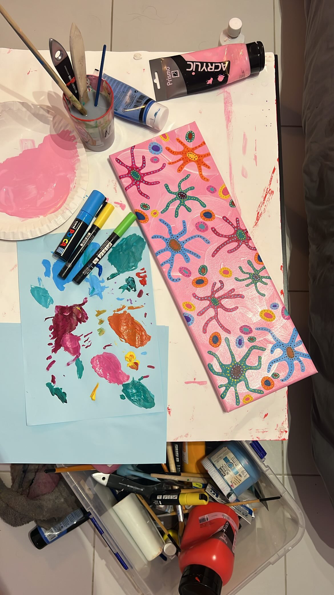
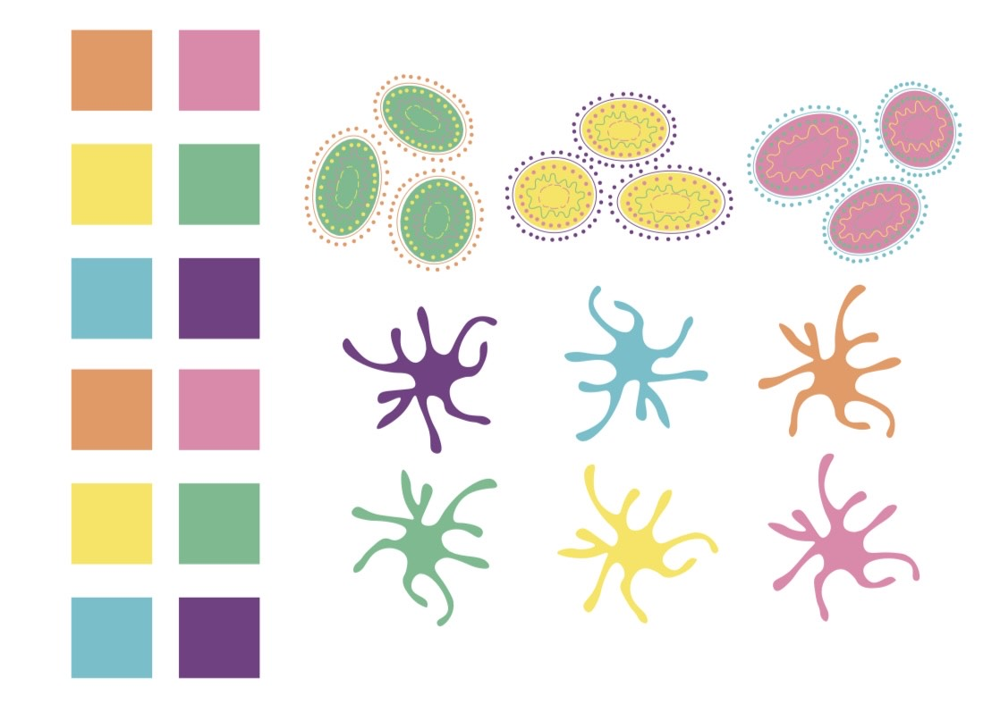
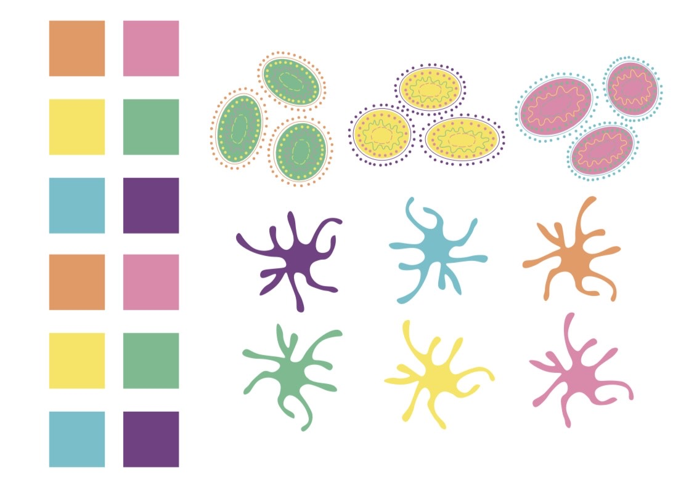
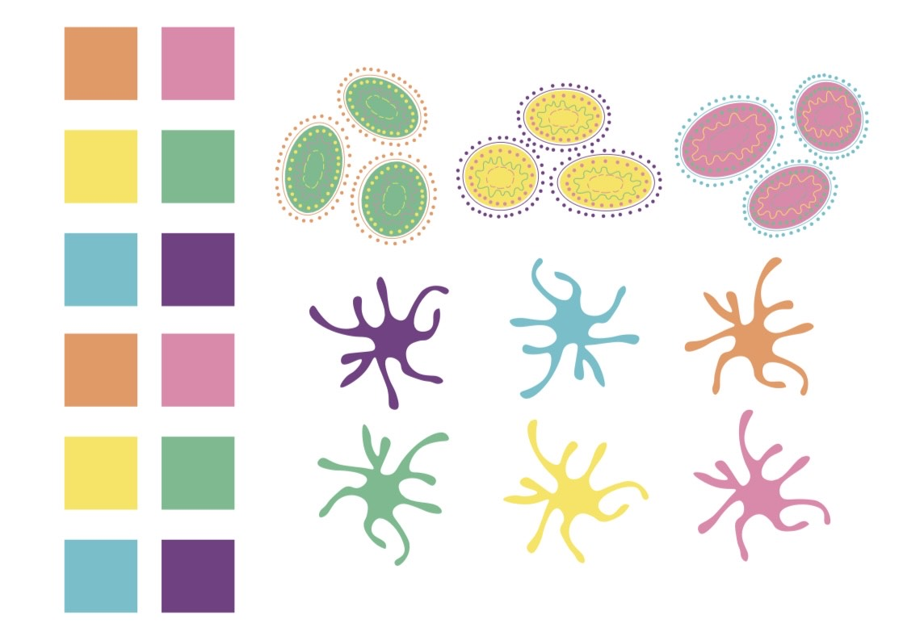

 


La vie en rose
Cette création a d’abord été réalisée sur Illustrator, puis reproduite à la peinture sur toile. Elle illustre un moment de vie marqué par un état d’esprit joyeux et optimiste. Les formes simples et les couleurs vives ont été choisies pour transmettre une sensation d’énergie et de mouvement.